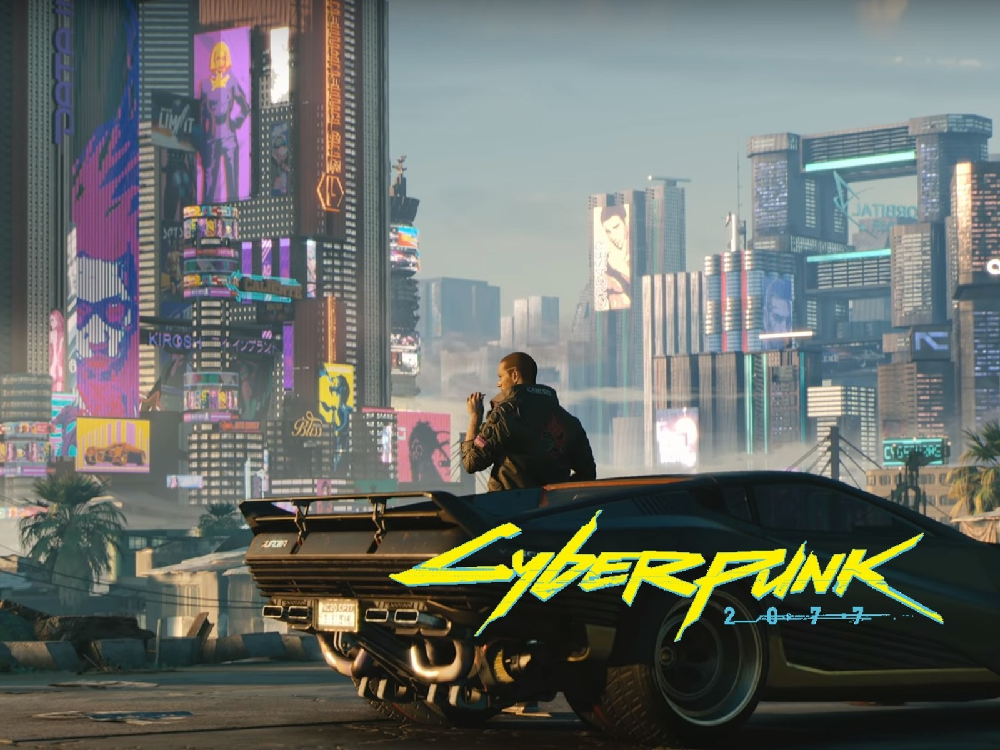

Story
จะเดินตามฉากชีวิตของ “V” นักรับจ้างฟรีแลนซ์ที่ดิ้นรนเอาตัวรอดอยู่ในมหานคร Night City
เมืองในรัฐแคลิฟอร์เนียร์ที่มีอัตราการเกิดอาชญากรรมสูงที่สุดในโลก V คือฟรีแลนเซอร์ที่รับงานสารพัด
ไม่ว่าจะเป็นงานสุจริตหรืองานเปื้อนเลือด และยังยินดีรับงานจากผู้จ้างทุกรูปแบบใน Night City
ไล่ตั้งแต่แก๊งนักเลงข้างถนน นายหน้าค้าแก็ดเจ็ตไฮเทค ไปจนถึงเจ้าหน้าที่จากบริษัทข้ามชาติขนาดยักษ์
หากวันหนึ่งคุณตื่นขึ้นมาแล้วพบว่าลูกตาข้างหนึ่งของคุณกลายเป็นโลหะเย็นเฉียบ
แขนของคุณถูกดัดแปลงให้กางออกได้เพื่อปลดปล่อยเคียวเหล็กคมกริบ
ทุกวันคุณต้องออกไปท่องโลกยามวิกาลที่เต็มไปด้วยหลอดไฟนีออนสารพัดสี
ส่งแสงตัดกับความมืดของตึกแถวแออัดที่เต็มไปด้วยประชากรครึ่งคนครึ่งเหล็ก
ทุกตรอกซอยต่างมีโอกาสทำเงินและภัยอันตรายซ่อนเร้นอยู่ มันฟังดูเป็นชีวิตที่ไม่น่าอภิรมย์เลยใช่มั้ย?
แต่สำหรับเกมเมอร์มันกลับเป็นชีวิตที่เต็มไปด้วยเรื่องราวตื่นเต้นกระตุ้นต่อมอะดรีนาลีน ยินดีต้อนรับสู่โลกแห่ง
Cyberpunk ยินดีต้อนรับสู่มหานคร Night City

V เป็นตัวละครที่คุณจะได้ปั้นขึ้นมาเองกับมือ คุณจะได้เลือกตั้งแต่เพศ บรรทัดฐานความดีความชั่ว
บุคลิกส่วนตัว และปูมหลังของเขาหรือเธอว่าอะไรคือสาเหตุที่ทำให้ V ย้ายเข้ามาสู่เมืองนี้ หรือหากอยากให้ V
เกิดและอาศัยอยู่ในเมืองนี้มาตั้งแต่เด็กก็ย่อมได้ ทุกการกระทำของ V
จะขึ้นอยู่กับการตัดสินใจของตัวคุณเองและมันจะสร้างผลกระทบแก่นคร Night City ไม่มากก็น้อย
รวมถึงยังกระทบกับจุดยืนของ V ในสายตาของตัวละครอื่นด้วย
การตัดสินใจบางอย่างอาจทำให้ตัวละครหลักบางตัวหายหน้าไปเลยซึ่งจะทำให้เนื้อเรื่องของ V เปลี่ยนไปอย่างสิ้นเชิง
เรียกได้ว่าคุณอยากให้ V เป็นใคร โหดเลวดีแค่ไหนก็สามารถกำหนดได้หมด
ซึ่งจุดนี้น่าจะถูกใจเกมเมอร์ที่ชอบเคลียร์เกมหลายรอบเป็นแน่
Gameplay
เปิดโลกใหม่ในมุมมอง FPS เพราะพวกเขาคิดว่ามุมมองนี้จะทำให้เกมเมอร์ “อิน” กับเกมมากที่สุด
เห็นรายละเอียดยิบย่อยที่แฝงอยู่ตามตึกรามบ้านช่องมากที่สุด
และตื่นตะลึงไปกับกราฟิกของเมืองอนาคตสุดอลังการที่จะทำให้คุณอ้าปากค้างกว้างที่สุด
เกมเมอร์จะได้ออกไปชื่นชมทุกตรอกซอกซอยของเมือง Night City ตามใจต้องการ
เนื่องจากแผนที่ในเกมนี้เปิดกว้างแบบ Open World เต็มที่
ดังนั้นคุณจะเลือกไปที่ไหนก่อนที่ไหนหลังก็ถือเป็นเรื่องของคุณ แถมคุณยังสามารถเลือกได้เองว่าจะเดินไปทำภารกิจ
จะขี่มอเตอร์ไซค์ไป จะบึ่งรถซิ่งสุดเฟี้ยวไป หรือจะบังคับยานเหาะบินไปเลยก็ได้ถ้าคุณมีตังค์ซื้อ
เกมเมอร์จะได้ออกไปชื่นชมทุกตรอกซอกซอยของเมือง Night City ตามใจต้องการ
เนื่องจากแผนที่ในเกมนี้เปิดกว้างแบบ Open World เต็มที่
ดังนั้นคุณจะเลือกไปที่ไหนก่อนที่ไหนหลังก็ถือเป็นเรื่องของคุณ แถมคุณยังสามารถเลือกได้เองว่าจะเดินไปทำภารกิจ
จะขี่มอเตอร์ไซค์ไป จะบึ่งรถซิ่งสุดเฟี้ยวไป หรือจะบังคับยานเหาะบินไปเลยก็ได้ถ้าคุณมีตังค์ซื้อ
อย่างไรก็ตาม ถึงแม้ Cyberpunk 2077 จะดูเหมือนเกม FPS
แต่รับประกันได้เลยว่าแก่นแท้ของมันคือเกม RPG 99.99%
นั่นหมายความว่าการยิงหัวเก่งไม่ได้การันตีว่าคุณจะสามารถเก็บศัตรูได้เร็วขึ้นเสมอไป ค่าพลังโจมตีทั้งหลาย
(รวมถึงการกระทำอื่นๆ) จะขึ้นอยู่กับค่าสถิติ (Stat) ของ V ทั้งสิ้น ยิ่ง V สร้างผลงานมากเท่าไหร่ก็จะยิ่งมีค่าพลัง
อาวุธปืน ดาบ และแก็ดเจ็ตไฮเทคให้ใช้มากขึ้น ทั้งหมดทั้งมวลนี้จะช่วยให้สไตล์การเล่นของคุณสมบูรณ์แบบขึ้นไปอีก
CD Projekt RED พยายามสร้างระบบ Multiplayer ให้มีเนื้อหาเชื่อมโยงกับ Lore เกม เพื่อมอบประสบการณ์การเล่นเกมแบบใหม่
และทีมงานเชื่อว่า “เนื้อเรื่อง” ยังเป็นส่วนสำคัญที่เกม Cyberpunk 2077 ขาดไปไม่ได้
สิ่งที่ผู้เล่นหลายคนคาดหวังจากเกม Open World แบบกว้างใหญ่จัดเต็มนั่นก็คือเควสของเกมที่มีความหลากหลาย
ซึ่งหลายเกมก็เลยหนทางสบายในการใช้ระบบสุ่มเควสที่จะได้เจอ และส่วนใหญ่เกมที่ใช้ระบบนี้มักจะให้เควสที่ซ้ำๆ
กันมาค่อนข้างมาก แต่สำหรับ Cyberpunk 2077 จะไม่เป็นเช่นกัน
เพราะทุกเควสในเกมจะถูกสร้างขึ้นด้วยฝีมือของผู้พัฒนาในทีมทั้งหมด